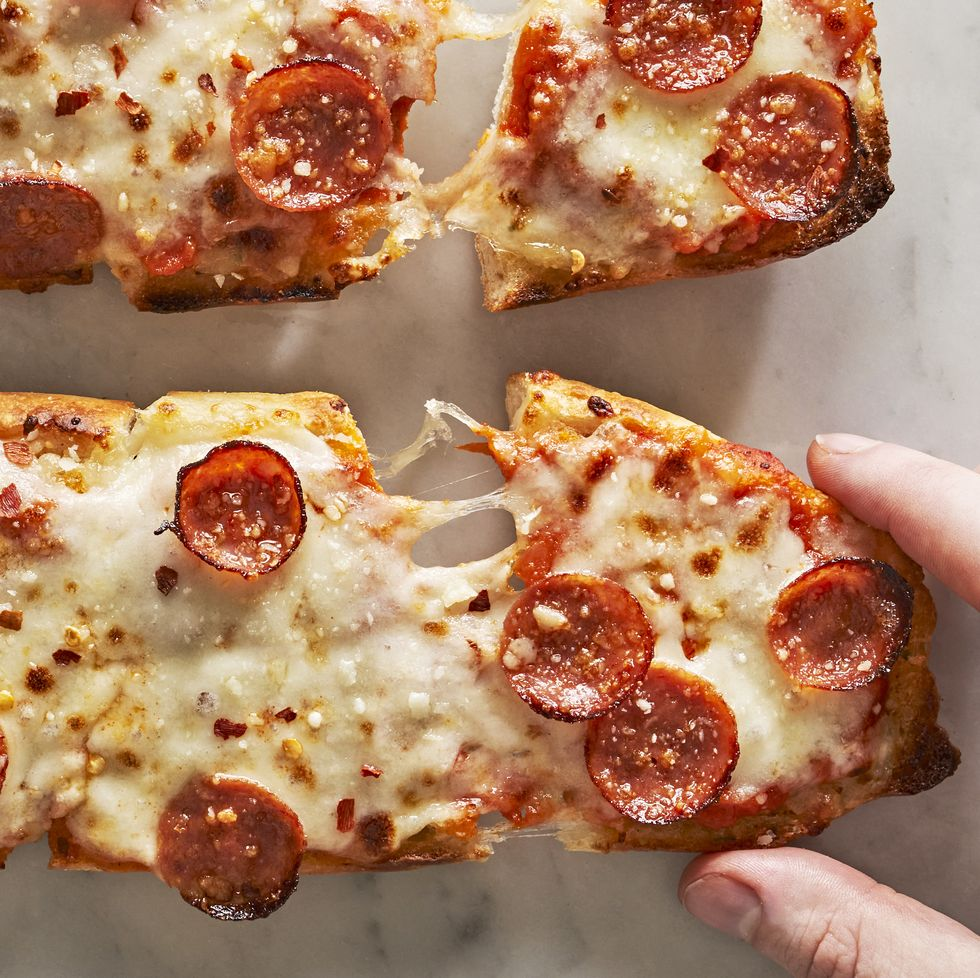

Garlic Bread Pizza

Description
Everybody loves pizza. The problem with ordering a pizza is that it might take forever for it to arrive, and an even bigger problem is that sometimes it takes too long, and your pizza is cold. If that's your experience look no further than this recipe, it's quick and easy, and it uses bread instead of dough, which means one less problem.
Ingredients
Pizza Sauce
- 1 (28-oz.) can whole peeled tomatoes
- 2 tbsp extra-virgin olive oil
- 3 cloves garlic, finely chopped
- 2 tbsp. tomato paste
- 1 tbsp. (or more) kosher salt
- 1/2 tsp. dried oregano
- 1/4 tsp. crushed red pepper flakes
- 1/2 tsp. granulated sugar (optional)
Garlic Bread Pizza
- 1 (10-oz) loaf frozen garlic bread
- 1 c. shredded mozzarella
- 14 pepperoni slices
- 2 tbsp. grated Parmesan
- 1/2 tsp. crushed red pepper flakes (optional)
Steps
Pizza Sauce
- In a blender or food processor, purée tomatoes until mostly smooth.
- In a large skillet over medium heat, heat oil. Add garlic and cook, stirring, until fragrant, about 30 seconds. Stir in tomato paste and cook, stirring constantly, until darkened, 1 to 2 minutes. Add puréed tomatoes and 1 teaspoon salt. Bring to a boil over medium-high heat, then reduce heat to medium-low and simmer until sauce is thickened and reduced by about one-third, 20 to 25 minutes. Taste and season with salt and granulated sugar for sweetness, if needed. Let cool to room temperature.
- Make Ahead: Pizza sauce can be made 5 days ahead. Let cool completely, then store in an airtight container and refrigerate, or freeze up to 1 month.
Garlic Bread Pizza
- Preheat oven to 425°. On a large baking sheet, arrange bread halves garlic side up.
- Bake bread until warmed through and crisp on the sides and bottom, 9 to 11 minutes.
- Spread each garlic bread half with 1/4 cup pizza sauce. Top with mozzarella, then pepperoni and Parmesan.
- Heat broiler. Broil bread until cheese is bubbling and browned, 3 to 5 minutes.
- Top with red pepper flakes, if using. Slice and serve.
Original post
Go back to Home Page